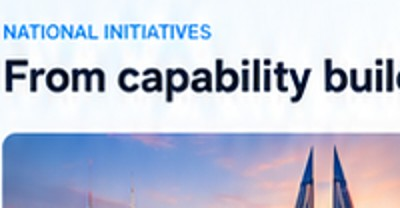
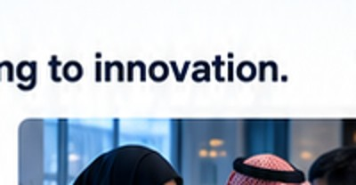

INITIATIVES
Cybersecurity Capability Beyond the Classroom
National and community initiatives connecting learners, professionals, government, academia and industry.

CYBER READY BAHRAIN
Private-sector readiness
Awareness and applied technical cybersecurity for SMEs and technical teams.

CYBER GUARDS
Talent & innovation
512 participants from 58 institutions, 111 submitted ideas and 23 finalist projects in 2025.
WHITE PAPERS
Knowledge → Practice → Impact
Reviewed cybersecurity knowledge from academia, professionals, students and institutions.
YOUTH & COMMUNITY
Cybersecurity for everyone.
Youth Cybersecurity Forum
Career dialogue, workshops and CTF activities.
CyberRangers
Age-appropriate cybersecurity learning through challenges and simulated missions.
Community Awareness
Cybersecurity at Home, Smart Parents, AI-related risks and safe digital behaviour.